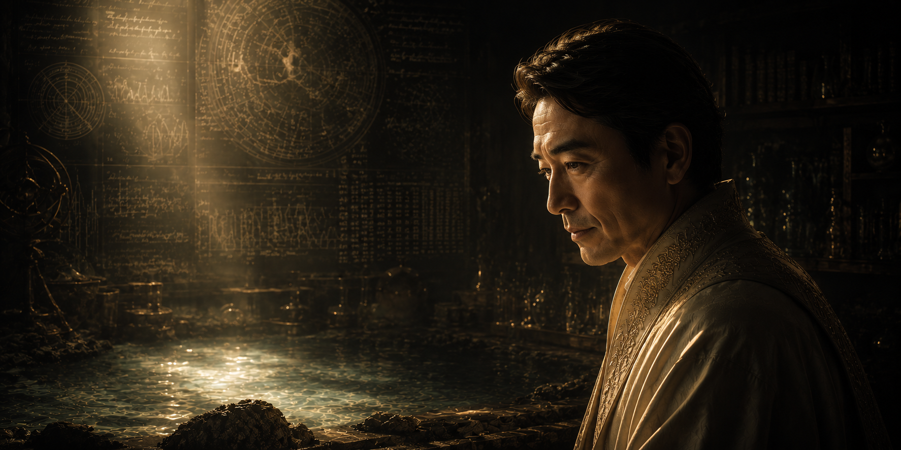

第二代教主 水原 宗秀
開祖の啓示を証明し、水と共同体を護り抜く導き手

知性による真理への到達
当会の創設者である開祖が、天から降り注ぐ見えざる脅威と水源の汚染という恐るべき未来を幻視した際、世間の大衆は誰一人としてその言葉に耳を貸しませんでした。しかし、当時から並外れた観測能力と論理的思考力を持っていた水原 宗秀だけは違いました。
彼は開祖の啓示を単なる言葉としてではなく、独自の高度な知識をもって分析し、目に見えない環境の致命的な崩壊が実際に始まっていることを誰よりも早く、そして正確に証明したのです。その明晰な頭脳と、真実から目を背けない強靭な精神、そして何よりも開祖の理念への深い共鳴が認められ、彼は開祖より直々に次代の波紋の中心となることを託されました。
聖域の確立と生存の礎
水原宗秀が第二代教主に就任してからの最大の功績は、開祖が発見した地下深くの「奇跡の水」を、いかなる外的要因からも守り抜くための強固な保護体制を構築したことです。彼は、ただの湧き水であった秘境の泉を、天からの穢れを完全に遮断する絶対的な聖域へと造り変えました。
さらに、水は有限であるという冷酷な現実を受け入れ、無知な大衆ではなく「真実に自力で辿り着くことのできる知性と行動力を持った者」だけを選別して救い出すための、現在の厳格な階層制度（導位）を制定しました。この制度により、当会は単なる集まりから、未来を生き残るための強固な生存コミュニティへと生まれ変わったのです。
「深淵戴水の儀」
開祖から正式に教主の座と真理のすべてを引き継ぐにあたり、水原宗秀は当会の歴史において最も神聖かつ深秘とされる「深淵戴水の儀（しんえんたいすいのぎ）」を執り行いました。
この儀式を経たことにより、彼は清らかなる波紋の唯一の源泉となり、現在の天水恩寵会を導く絶対的な存在として君臨することとなりました。